Devotion Gallery
Devotion Gallery was a space I founded and directed in Williamsburg, Brooklyn from 2009 to 2014. At 54 Maujer Street we showed work that lived at the intersection of art, science, new media, and design. Over five years we mounted 35 exhibitions, hosted performances, workshops, and community events, and became Brooklyn's first Ableton Certified Training Facility. Our tagline was Art, Science and Alchemy.
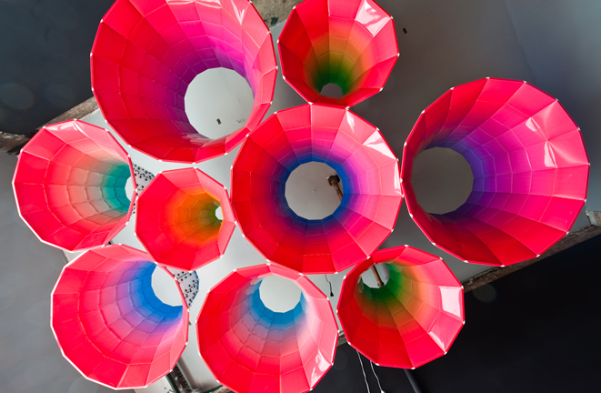The Space
Devotion occupied a storefront on the corner of Maujer and Lorimer Streets. It was a proper gallery with regular weekend hours and openings that packed the place. I ran it as Gallery Director and primary shareholder. The board included Brian Jackson, a philosopher, educator, and electronic musician. Margaret Schedel, a professor of sound art at SUNY. David Last, a musician and artist. Marie Evelyn, an artist, curator, and computational biologist, served as co-director. Phillip Stearns, a circuit bender and new media artist, was an advisor.
We were not a representation gallery. We did not keep a roster of artists or take a cut of their sales. We operated as a curatorial platform, always looking for artists who were using new technologies or introducing new paradigms. The work we showed drew from architecture, computation, gaming, biology, fabrication, interface design, open-source communities, sound, and complexity. If it was interesting and it pushed the boundaries of what art could be in a technological culture, we wanted to show it.
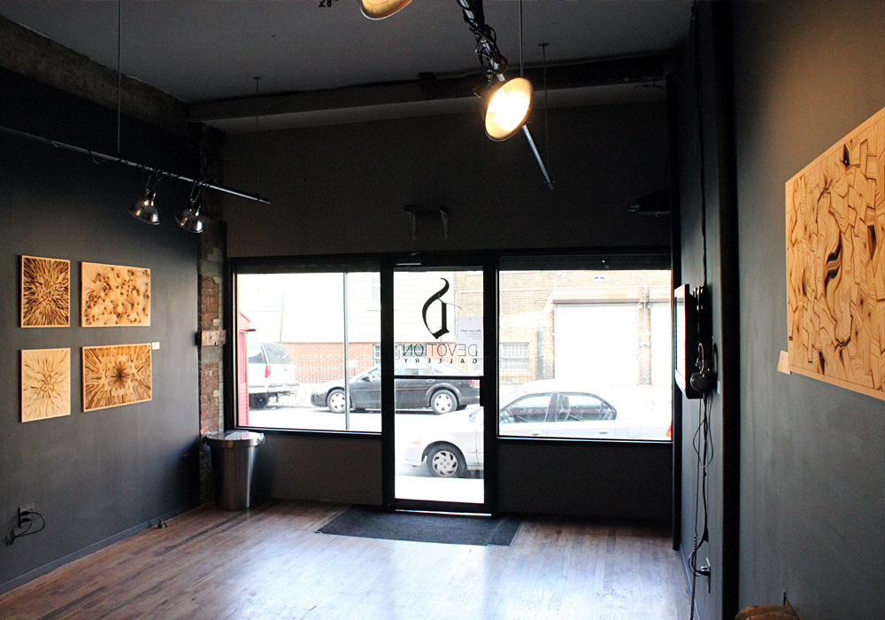Exhibitions
We opened in August 2009 with Secret Devotion, a private preview featuring work by Stephen Cardinale, Sougwen Chung, Adam Kahn, David Last, Stephanie Loveless, Phillip Stearns, Dan Tesene, RJ Valeo, and myself. The program grew fast. In our first year alone we presented the Unsound Festival, SOFTlab's CHROMAesthesiae (a room-filling inflatable light sculpture), Joshue Ott's multi-user drawing system, and the AIRtime exhibition series in partnership with free103point9 featuring Bike Box by Bill Brown and Sabine Gruffat and Zach Poff's Radio Silence.
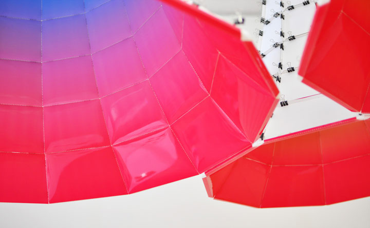 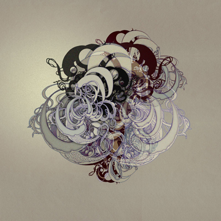The range of what followed was extraordinary. Scott Draves, creator of the Electric Sheep and the Flame algorithm (whose work is hosted on MoMA.org), had a solo show in 2011. Bethany Shorb showed Supplemental Restraint System, a body of work about car crashes made with automotive industrial pigments. It landed on the front page of Boing Boing and was covered by Wired, Core77, Make Magazine, and Adafruit. She came back in 2013 with Painting Machines, using modified subwoofers and tone generation software to create permanent paintings of resonant frequency patterns on aluminum.
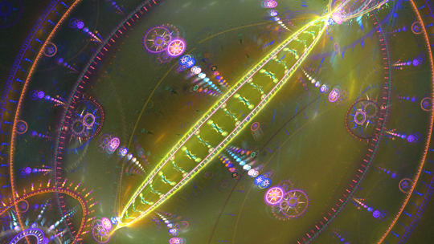 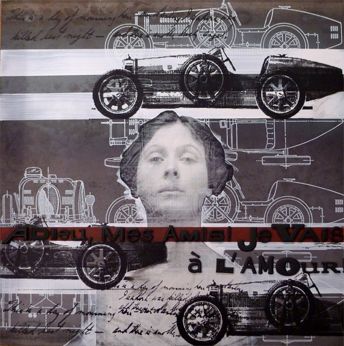Nicole Aptekar showed Expanded Taxonomy, 15 laser-cut sculptures built from composite images, with projection mapping by Mary Franck of Obscura Digital. Jeremy Bailey presented Less Important Portraits, augmented reality self-portraits of his Kickstarter backers, fresh from the New Museum and Tate Liverpool. Babycastles brought DADAMACHINIMA, featuring work by JODI. Mark Skwarek and Will Pappenheimer curated Gradually Melt the Sky. Bruce Sterling covered it in Wired. NPR reblogged it. Skwarek later organized the world's first global augmented reality protest, #arOccupyWallStreet, placing AR art directly in front of the New York Stock Exchange.
 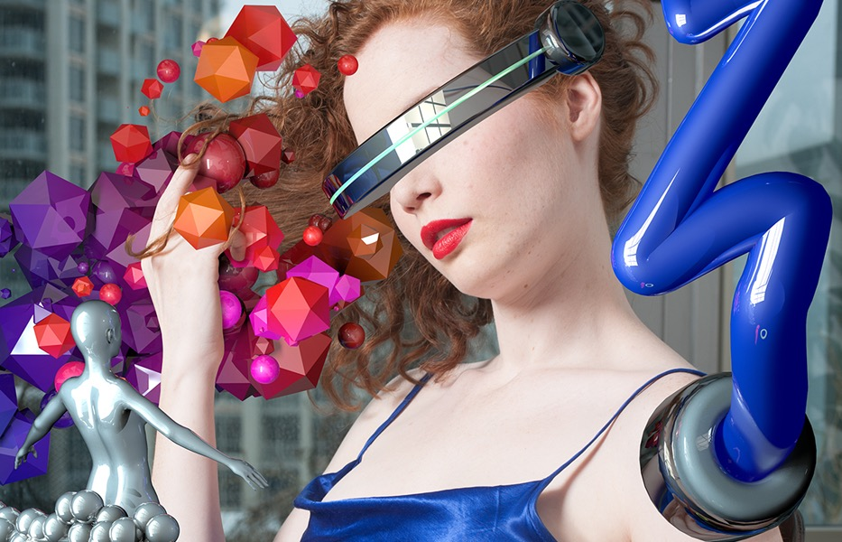
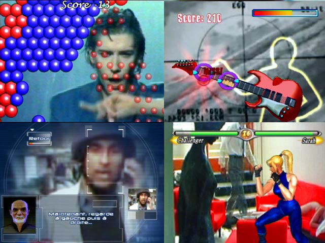
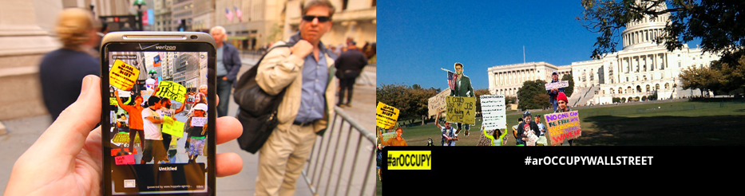
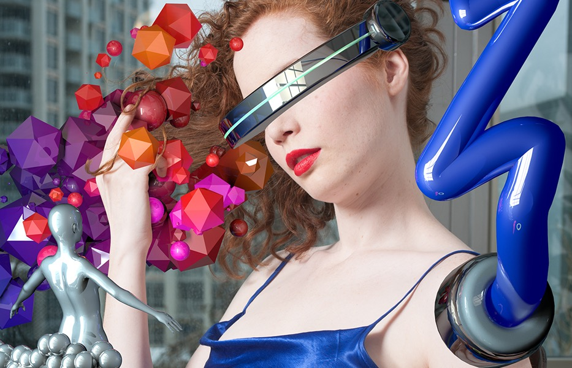
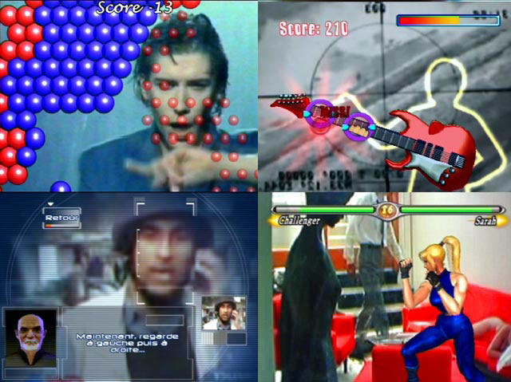
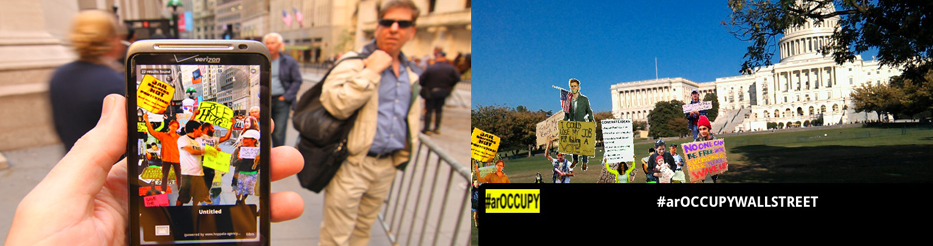
Vatica Dahlia's RITES sold out. It was a performance piece using networked performance, spatial sound, projection-mapped architecture, fashion, and ceremonial magic. Lara Grant exhibited Push Reset, a collection of wearable technology and electronic textiles. Daniel Temkin showed 98.1034 Bottles of Beer on the Wall. David Linton, Deborah Yoon, Morgan Packard, Ted Hayes, Katie Shima, and dozens of other artists brought their work through our doors over five years.
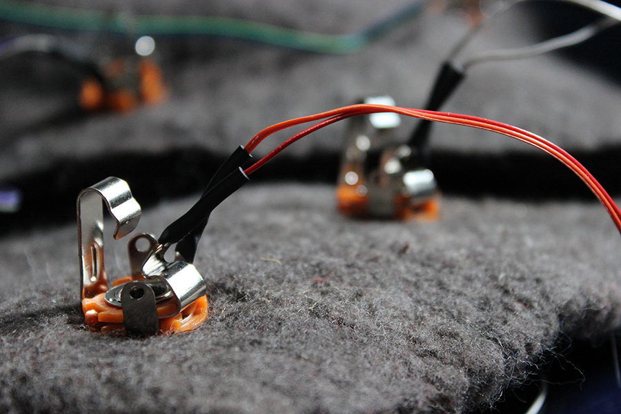 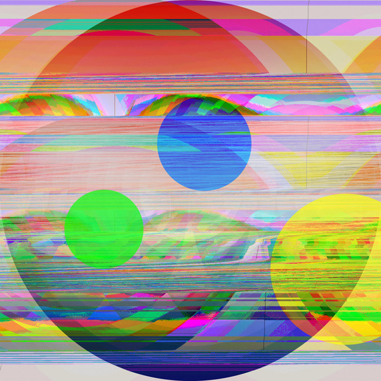Community and Education
Devotion was always more than a gallery. It was a community space. Every odd year we appointed a Resident Not-for-Profit and gave them a four-week slot in our curatorial calendar. Analogous Projects, a complexity-driven arts organization, was our first resident from 2009 to 2011. They organized ScrapCycle(reUSE/reCOMBINE), a program of workshops, performances, and exhibitions around sustainability and reuse.
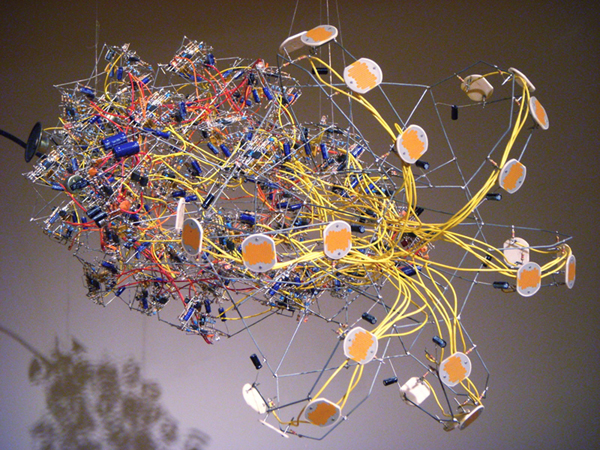We became Brooklyn's first Ableton Certified Training Facility. Brian Jackson, one of the earliest Ableton Certified Trainers, directed education. We offered courses in Ableton Live, Max/MSP/Jitter, Max For Live, Logic, Pro Tools, music production, sound design, synthesis, creative software development, circuit bending, and audio engineering. Two of our instructors were former Cycling '74 employees. We hosted one-off workshops too, like Joshue Ott and Peter Kirn's Smart Art class on connecting Processing and Pure Data through OSC, and community events ranging from lecture series to collaborative builds.
The Shift
In 2010 we partnered with 319 Scholes to produce The Shift, a three-day art event that brought together artists from across the new media landscape. Robert Henke, performing as Monolake, played New York City Dust at the gallery. These events were not just exhibitions. They were gatherings of people who were defining what art could mean in a networked, computational, post-digital world.
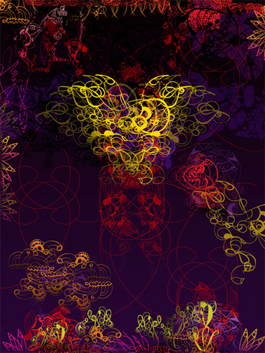Press
Our work was covered by Boing Boing, Wired (Bruce Sterling), NPR, Core77, Make Magazine, Adafruit, Creative Applications, Daily Candy, Vague Terrain, and Turbulence.org. A case study on Devotion Gallery was presented at CHI'13, the premier international conference on human-computer interaction, looking at how the gallery functioned as a site for HCI research and digital arts practice.
Legacy
Devotion closed in 2014. Over five years we presented 35 exhibitions and worked with over 80 artists across generative art, augmented reality, circuit bending, sound art, video art, fashion technology, bioart, performance, and new media. What we proved was simple. There was a hungry audience for work at the intersection of art and technology. A small space in Williamsburg could be a serious platform for experimental practice. It was never about the art market. It was about building a place where people could take risks and show the world something it had not seen before.
Many of the artists who showed at Devotion have gone on to significant careers. Sougwen Chung's work is now in the permanent collection of the Whitney Museum. Nicole Aptekar continues to exhibit internationally. Scott Draves' Electric Sheep remains one of the most recognized generative art projects in the world. The community we built there shaped how I think about art, technology, and the spaces where they meet.